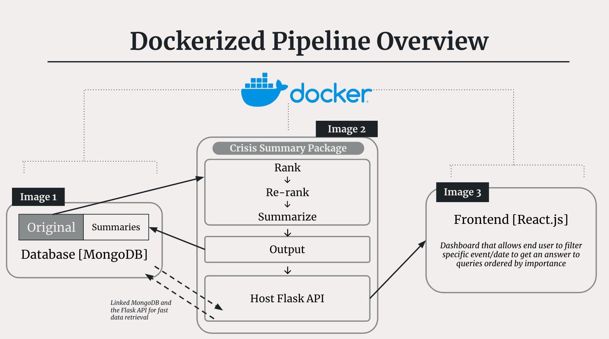
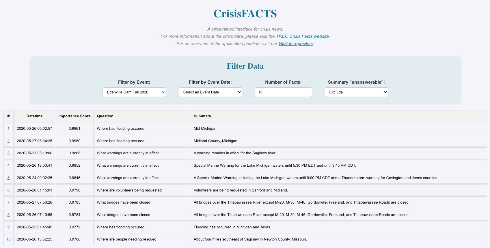
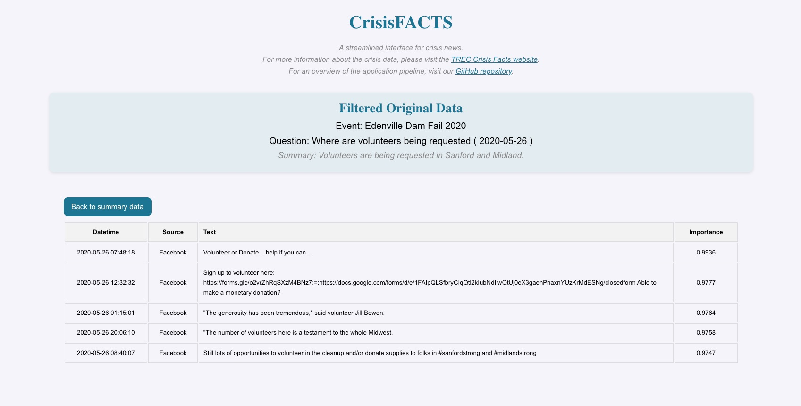

🗞️ Information Retrieval: CrisisFACTS 🗞️
Authors: JaeHo Bahng, Agustina Zuckerberg, Brian Kwon, Jiatong Liu, Shriya Chinthak
Using the data from the TREC CrisisFACTS challenge, we implemented a project that takes in news regarding crisis events from numerous online sources, ranks them of importance to answer specific questions regading the crisis, summarize imformation into a concise answer, and display the answers in a user-friendly application.
For a detailed overview of the ranking and summarization portion, please visit our subdirectory for the python package.
Please note that the dockerized version of this project and the frontend application is not yet available for public use due to this being a class project. Please see the following a brief overview of the project and screenshots of the application.
Pipeline
Our pipeline is a three stage dockerized process.
Image 1: Our database, consisting of the original CrisisFACTS data and the summarized data from the second step, is created via MongoDB.
Image 2: Our crisisfacts python package ranks, reranks, and summarize the news documents into answers for the CrisisFacts queries. We also use a Flask Host API to connect the summarized data from the database to the frontend
Image 3: Our frontend application created using React and connect to the Flask API

Frontend
Our application provides a streamlined and user-friendly interface to view answers to queries regarding crisis events.
On the home page, as shown below, we can see that there are 4 main filters.
Event: a dropdown of crisis events located with the TREC CrisisFACTS dataset
Date: filters the news from that event to a specific datetime.
Facts: customize the number of facts shown on screen
unanswerable: shows summaries that were marked as unanswerable based on the ranked importance of news and summarizes from the GPT model.
To see how to summary was generated, you can also click of the row’s # index which will bring you to the second page.

On the second page of the application, shown below, the light blue box shows event, question, and summary of the row you would have clicked on on the first page. Below are the 5 news pieces that were ranked of highest importance to answer the query and used as inputs for the summarization model. Additionally, you can also see the source from which the news cames from. To go back to the home page, simply click the button on the top left that says Back to summary data.
